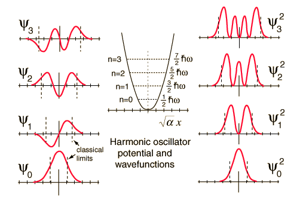

Probability Distributions for the Quantum Oscillator
The solution of the Schrodinger equation for the quantum harmonic oscillator gives the probability distributions for the quantum states of the oscillator.
| The solution gives the wavefunctions for the oscillator as well as the energy levels. The square of the wavefunction gives the probability of finding the oscillator at a particular value of x. Note that there is a finite probability that the oscillator will be found outside the "potential well" indicated by the smooth curve. This is forbidden in classical physics. |

|
Index
Schrodinger equation concepts
References
Beiser, Perspectives
Sec 8-7
Thornton & Rex
Sec 7-6 |